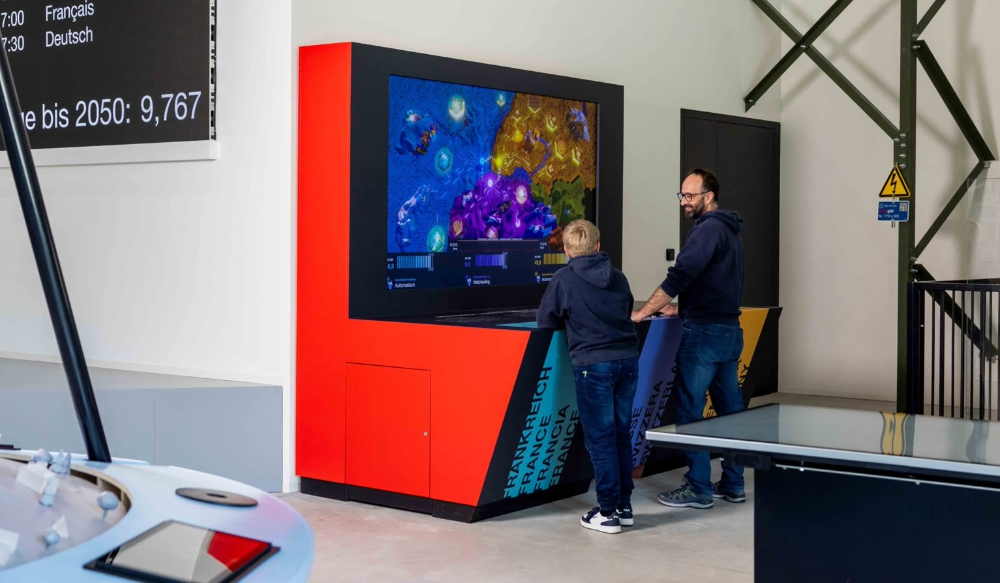
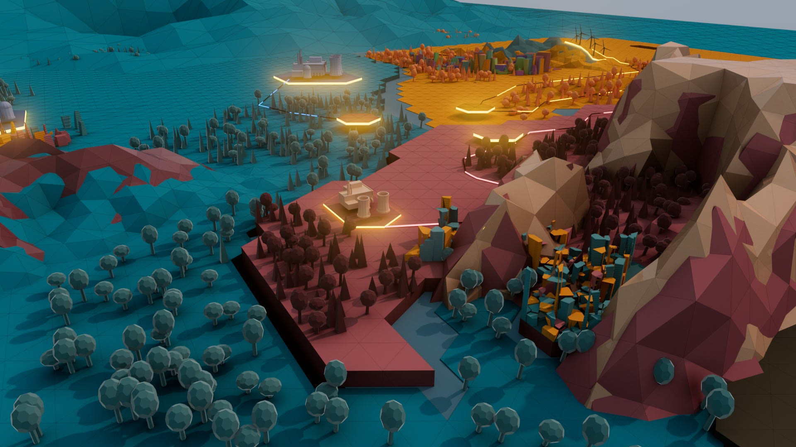
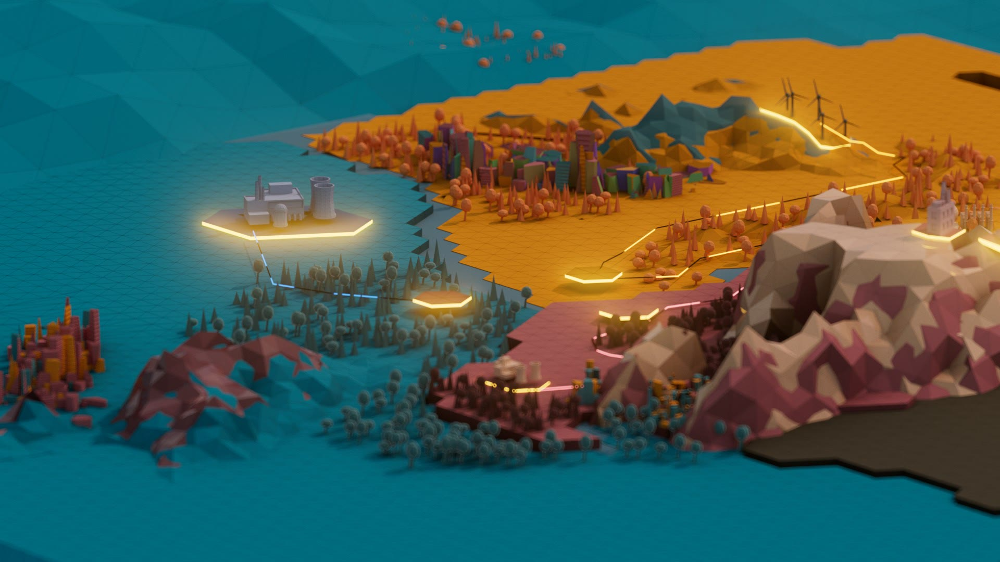
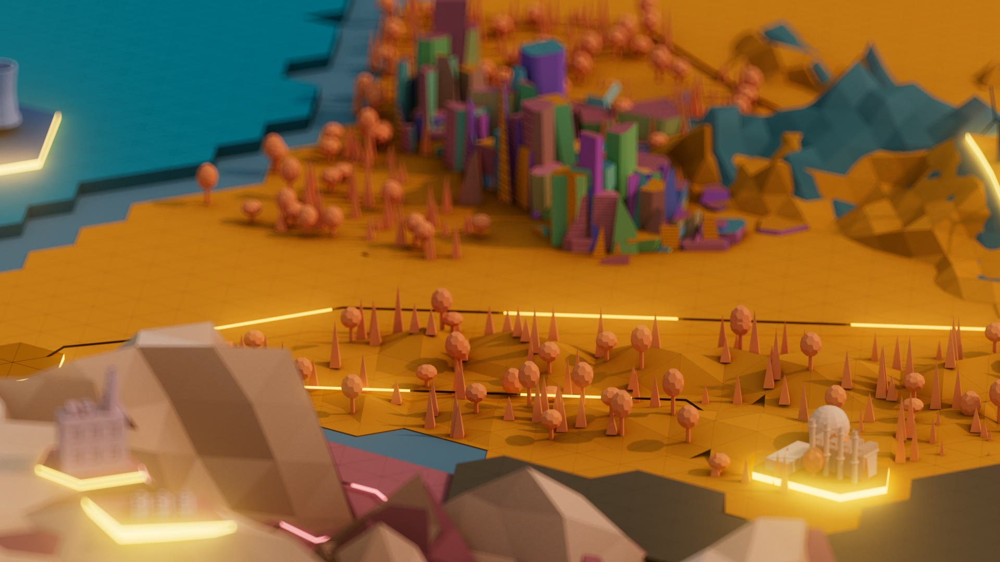
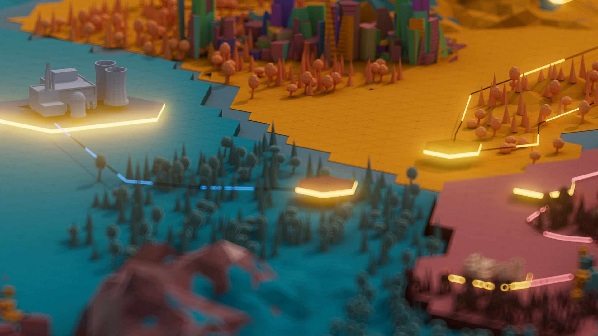

Verkehrshaus
A multiplayer educational game staging the central European power grid.
A multiplayer installation for the Swiss Museum of Transport that turns the abstract idea of grid balancing into a hands-on game. It serves the educational purpose of understanding the back end and infrastructure of our energy-hungry world — intricate and complex systems, traversing large portions of geography, forming this technological marvel happening behind the scenes of our everyday lives.
A low-poly, stylised map of central Europe was created, with Basel serving as the center and symbolic junction between the three countries. Players act as energy conductors, each in control of one country's power output, working to keep the shared European grid in equilibrium.
The game simulates days passing in a stop-motion fashion, and real-world scenarios occur that affect energy sources differently: an overflow of nuclear energy might mean solar farms need to shut down, or a storm in Germany can close down solar farms, so France needs to produce more hydroelectric energy — each country running a mix of nuclear, solar, wind, and coal, with players adjusting production and frequency in real time to keep the whole system balanced.




